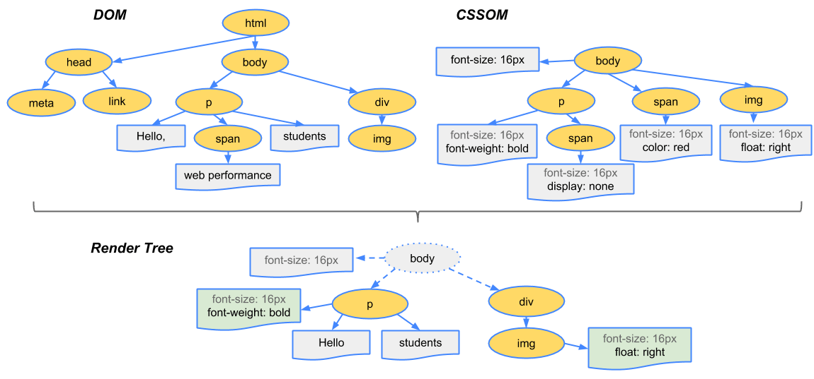

回流与重绘
[css 当渲染树中的元素尺寸，结构或属性发生改变时，需要浏览器重新渲染的过程称为回流( reflow )，而当渲染树中元素样式的改变，并不影响布局时，浏览器重新绘制它的过程称为重绘( repaint )
DOM 树与渲染树
DOM 树是包含了所有 HTML 节点的树，渲染树是 DOM 树和 CSSOM 树组合而成的，最终渲染在页面上的树。DOM 树和渲染树都是浏览器生成的。
浏览器渲染过程
- 处理 HTML 标记并构建 DOM 树。
- 处理 CSS 标记并构建 CSSOM 树。
- 将 DOM 与 CSSOM 合并成一个渲染树。
- 根据渲染树来布局，以计算每个节点的几何信息。
- 将各个节点绘制到屏幕上。
图例

构建渲染树过程
- 从 DOM 树的根节点开始遍历每个可见节点。
- 某些节点不可见（例如脚本标记、元标记等），因为它们不会体现在渲染输出中，所以会被忽略。
- 某些节点通过 CSS 隐藏，因此在渲染树中也会被忽略。例如，图中的 span 节点不会出现在渲染树中，因为有一个显式规则在该节点上设置了“display: none”属性。
- 对于每个可见节点，为其找到适配的 CSSOM 规则并应用它们。
- 发射可见节点，连同其内容和计算的样式。
引起回流和重绘
常见的引起回流操作：页面首次渲染，窗口大小改变，元素尺寸大小改变，元素内容变化，添加或删除可见的DOM元素等
常见的引起重绘操作：改变颜色，改变背景颜色，visibility 隐藏显示等
注意
回流一定会引起重绘，而重绘不一定会引起回流
请注意 visibility: hidden 与 display: none 是不一样的。前者隐藏元素，但元素仍占据着布局空间（即将其渲染成一个空框），而后者 (display: none) 将元素从渲染树中完全移除，元素既不可见，也不是布局的组成部分